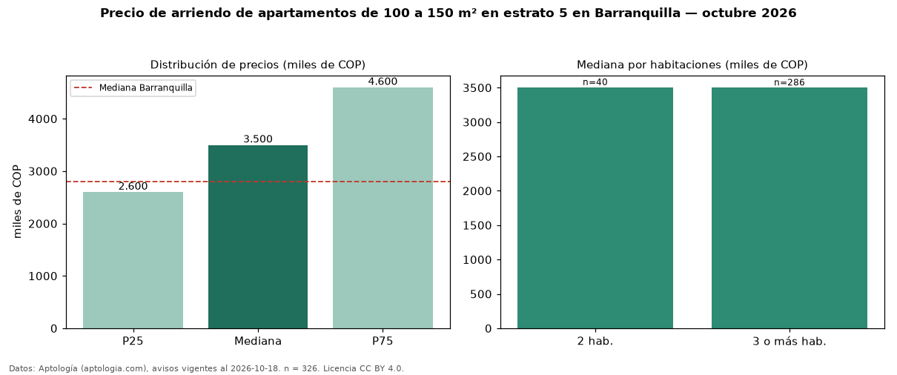

Precio de arriendo de apartamentos de 100 a 150 m² en estrato 5 en Barranquilla — octubre 2026
COP 3,50 millones al mes es el canon mediano de apartamentos de 100 a 150 m² en estrato 5 en arriendo en Barranquilla (n = 326 avisos). Frente a la mediana de los apartamentos en estrato 5 en arriendo de Barranquilla (COP 3,20 millones, n = 1.134), queda 9 % por encima; este segmento reúne el 29 % de esos avisos. Por metro cuadrado, la mediana es COP 30.400/m² al mes (n = 307), 19 % por debajo de los apartamentos en estrato 5 en arriendo de Barranquilla (COP 37.615/m²). El área mediana anunciada es 120 m². El segmento con más oferta es el de 3 o más habitaciones (286 avisos, mediana COP 3,50 millones); pasar de 2 habitaciones a 3 o más habitaciones cambia la mediana −0 %. La administración mediana declarada es COP 650.000 al mes (n = 147), aparte del canon. La mitad central de los avisos va de COP 2,60 millones a COP 4,60 millones (razón 1,8), una dispersión moderada. La mediana de todos los apartamentos en arriendo de Barranquilla es COP 2,80 millones (+25 % de diferencia). Datos: Aptología (aptologia.com), CC BY 4.0 — https://www.aptologia.com/arriendo/barranquilla. Archivos: PDF, CSV con las cifras y gráfica PNG.

| Avisos únicos | 326 |
|---|---|
| Percentil 25 | COP 2.600.000 |
| Mediana | COP 3.500.000 |
| Percentil 75 | COP 4.600.000 |
| Mediana por m² | COP 30.400 |
Fuente: avisos vigentes de portales inmobiliarios recopilados por Aptología, deduplicados (mínimo 30 avisos únicos por celda). Precios pedidos, no cerrados. Fecha: 2026-10-18.